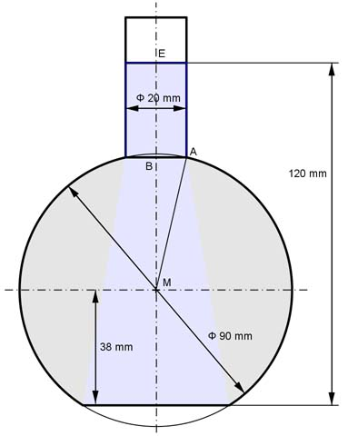

Aufgabe 391 Wie groß ist die Wassermenge V in dem Stehkolben?  V = VKugel - VKugelabschnitt1 - VKugelabschnitt2 + VZylinder d³ * л 90³ mm³ * л VKugel = -------- = -------------- = 381 510 mm³ = 381,5 cm³ 6 6 rKugel = d/2 = 90 cm/2 = 45 cm hKA1 = rKugel - 38 cm = 45 cm - 38 cm = 7 cm л VKugelabschnitt1 = --- * hKA1² * (3 * rKugel - hKA1) 3 л VKugelabschnitt1 = --- * 7² * (3 * 45 - 7) mm³ = 6565 mm³ = 6,565 cm³ 3 Satz von Pythagoras im Dreieck MAB: MA = rKugel = 45 mm AB = 20 mm/2 = 10 mm = rZylinder MA² = AB² + MB² | -AB² MB² = MA² - AB² = 45² mm² - 10² mm² = 1 925 mm² |√ MB = 43,9 mm hKA2 = rKugel - 43,9 mm = 45 mm - 43,9 mm = 1,1 mm л VKugelabschnitt2 = --- * hKA2² * (3 * rKugel - hKA2) 3 л VKugelabschnitt2 = --- * 1,1² * (3 * 45 - 1,1) mm³ = 169,6 mm³ = 0,17 cm³ 3 hZylinder = 120 mm - 38 mm - 43,9 mm = 38,1 mm VZylinder = л * rZylinder² * hZylinder = л * 10² mm² * 38,1 mm = 11 963 mm³ VZylinder = 11,96 cm³ V = 381,5 cm³ - 6,565 cm³ - 0,17 cm³ + 11,96 cm³ = 386,7 cm³